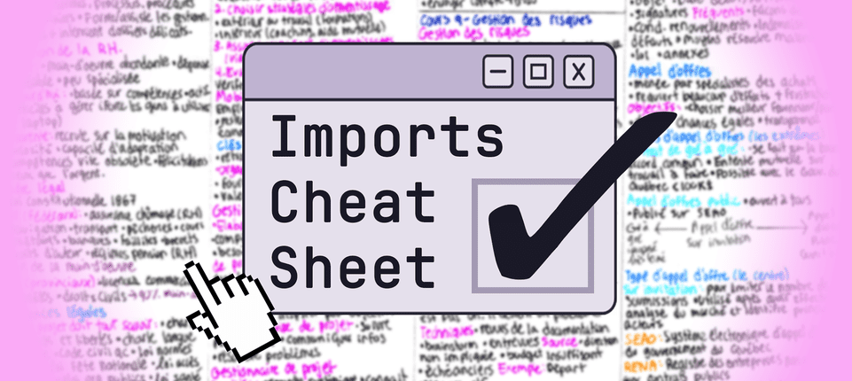

QA Automation Course
In this course, you will start an exciting journey in the world of QA Automation! The course will teach you the material in a comprehensive manner, including constant follow-along practices to ensure you understand the material and gain the ability to tackle real-world projects.
You will:
- Be Proficient with Java Programming
- Familiarized with HTML and JavaScript
- Use Selenium as an Automation tool
- Automating on websites
Best of luck!
Intro to Java
.png)
What is Java? Java is a versatile programming language developed at Sun Microsystems by James Gosling. The project began in 1991, and by 1995, Java was officially released. Since then, it has become a popular language for various applications...
Read more
First Java Program
.png)
Get ready! In this session, we'll use IntelliJ as our Integrated Development Environment (IDE) to write and run our first Java program. We'll cover the basics, including downloading IntelliJ, setting a workspace, and creating a Java project to generate...
Read more
Java Variables Guide
Java is a powerful and widely-used programming language, and one of the fundamental concepts you'll encounter as a beginner is "variables." Imagine variables as containers that hold different types of information, like numbers, words, or even...
Read more
Java Statements
Java provides a set of control flow statements that allow you to control the flow of your program. These statements help you make decisions, repeat tasks, and create flexible and dynamic programs. In this article, we'll explore the basics of Java control...
Read more
Java Array

What is an Array? Think of an array as a collection of elements, like a row of boxes. Each box can hold a specific piece of information, and the entire row allows you to organize and manage multiple pieces of data together. In Java, you can use arrays to store multiple values of the same type under a single...
Read more
Collections in Java

A collection is a framework that provides a set of interfaces and classes to store, manipulate, and organize groups of objects. Think of it as a versatile toolbox offering different types of containers to efficiently handle data. These containers help you perform various operations like adding, removing...
Read more
Exception Handling in Java

Exception handling is a crucial aspect of Java programming that allows developers to gracefully manage unexpected events in their code. In this article, we'll explore the basics of exception handling, including what exceptions are, how to handle them using try-catch blocks, different types of...
Read more
OOP with Java
Object-Oriented Programming (OOP) is a programming paradigm that revolves around the concept of "objects." These objects are instances of classes, which act as blueprints for creating objects. The key principles of OOP include encapsulation, inheritance, and polymorphism. In Java...
Read more
Intro to HTML
HTML, or HyperText Markup Language, is the backbone of the World Wide Web. If you've ever wondered how websites are made, HTML is the key ingredient that makes it all possible. In this article, we'll take a journey into the world of HTML...
Read more
Intro to JavaScript

JavaScript, often abbreviated as JS, is a versatile and dynamic programming language that plays a crucial role in web development. While Java and JavaScript share a similar name, they are distinct languages with different purposes and features. As we...
Read more
XML and JSON
In the world of software development and quality assurance (QA), two popular data interchange formats, XML (eXtensible Markup Language) and JSON (JavaScript Object Notation), play crucial roles. Understanding these formats is meaningful for QA...
Read more
Maven and TestNG

In the realm of software testing and quality assurance automation (QA), having the right tools is crucial to ensure the reliability and efficiency of software products. Maven and TestNG are two such tools that play significant roles in the development...
Read more
Selenium
In today's fast-paced world of software development, quality assurance (QA) automation has become an indispensable part of the process. With the need for rapid testing and deployment, manual testing alone can't keep up with the demands. This is where automation tools like Selenium come into play...
Read more
First Test Automation
I am happy to share that in this guide, we'll walk you through the step-by-step process of running your first Selenium test automation in IntelliJ. To get started, we will set up our testing environment in IntelliJ. Enter my GitHub repository to download my suggested environment. It will skip some...
Read more
Imports Cheat Sheet
In order to use more advanced commands, we need beforehand to write our imports. Imports allow us to bring external libraries or built-in modules into our script, making additional functions and classes available. Below is a cheat sheet of essential imports for Selenium automation...
Read more
WebDriver Cheat Sheet

After understanding selenium better, we can learn new WebDriver commands to create more advanced projects. I want you to look at the cheat sheet and create your own automation, feel free to play with the commands. You can put WebDriver commands on @BeforeTest, @Test, and @AfterTest to craft...
Read more